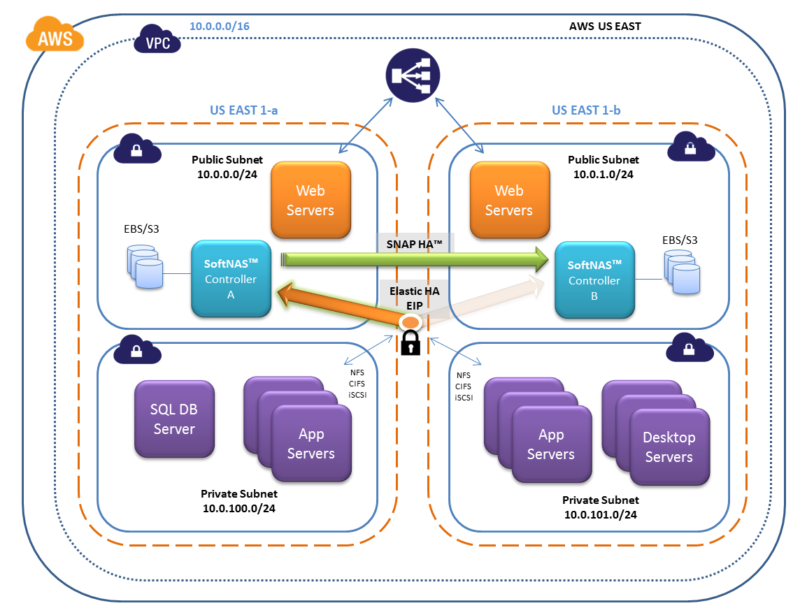
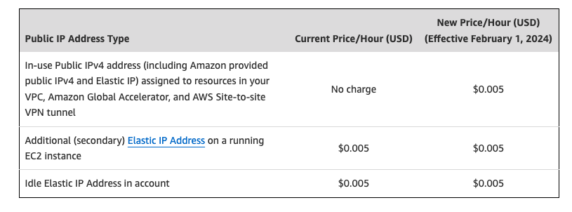
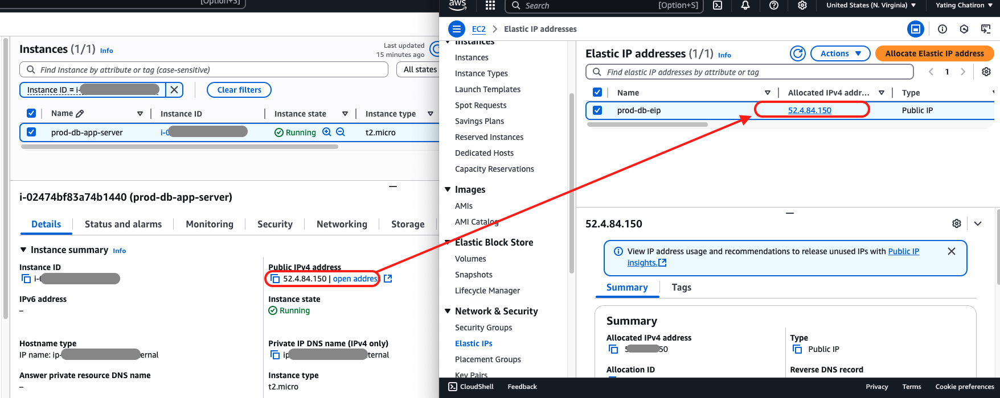

Associez une IP Fixe à votre Instance EC2 avec Terraform : La Méthode Économique
23 Juin 2025, 09:13 CEST
DevOpsApplication Node.js et sa base de données RDS avec AWS Secrets Manager
Aujourd’hui, nous nous attaquons à un autre irritant courant en environnement de développement : l’adresse IP publique de notre instance EC2 qui change à chaque redéploiement Terraform.
Pour faciliter les présentations à l’équipe, configurer un DNS ou simplement avoir un point d’accès stable, une IP fixe est indispensable. La solution la plus simple et la plus économique pour un environnement de dev/staging est d’utiliser une IP Élastique (EIP).
Pourquoi opter pour une IP Élastique (EIP) ?
Une IP Élastique est une adresse IPv4 publique et statique que vous allouez à votre compte AWS et que vous pouvez attacher à une instance EC2. Contrairement à l’IP publique standard, elle présente plusieurs avantages :
- Adresse IP Fixe : L’EIP ne change jamais, même si vous arrêtez et redémarrez votre instance. C’est idéal pour configurer un enregistrement DNS (ex: dev.votre-app.com) ou pour autoriser cette IP dans des pare-feux.
- Gestion Simplifiée : Elle facilite le dépannage et la gestion de l’accès à votre environnement de développement.
- Faible Coût : C’est une solution bien plus abordable qu’un Load Balancer, parfaite pour un besoin simple sur une seule instance.

⚠️ Point sur la tarification (Mise à jour 2024)
Autrefois gratuite lorsqu’elle était attachée à une instance en cours d’exécution, AWS facture désormais toutes les adresses IPv4 publiques depuis le 1er février 2024. Le coût est d’environ 0,005 $ par heure, soit environ 3,60 $ par mois. Cela reste une option très économique pour la stabilité qu’elle apporte en développement.

Mettre en place l’EIP avec Terraform en 2 étapes
L’ajout d’une EIP à une configuration Terraform existante est très simple. Nous allons ajouter deux ressources à notre fichier main.tf.
Étape 1 : Allouer une nouvelle IP Élastique (aws_eip)
Cette ressource demande à AWS de réserver une nouvelle EIP dans votre VPC. Ajoutez ce bloc à votre fichier main.tf.
# examples/minimal/main.tf
# 1. Alloue une nouvelle IP Élastique dans votre VPC
resource "aws_eip" "todo_app" {
# 'vpc = true' indique que l'EIP est pour une utilisation dans un VPC.
# L'argument 'instance' est déprécié, on privilégie une association séparée.
vpc = true
tags = {
Name = "${var.identifier}-eip"
}
}
Étape 2 : Associer l’EIP à l’instance EC2 (aws_eip_association)
Maintenant que l’IP est réservée, cette seconde ressource l’associe à votre instance EC2 existante.
# examples/minimal/main.tf
# 2. Associe l'EIP à votre instance EC2
resource "aws_eip_association" "eip_assoc" {
# L'ID de l'instance EC2 déjà définie dans votre code
instance_id = aws_instance.app_server.id
# Fait le lien avec l'EIP que nous venons de créer
allocation_id = aws_eip.todo_app.id
}
Après avoir ajouté ces deux blocs, votre fichier main.tf (version simplifiée) ressemblera à ceci :
# --- Votre code existant ---
resource "aws_instance" "app_server" {
ami = data.aws_ami.amazon_linux.id
instance_type = var.ec2_instance_type
# ... autres configurations ...
}
# --- NOUVEAU BLOC AJOUTÉ ---
resource "aws_eip" "todo_app" {
vpc = true
tags = {
Name = "${var.identifier}-eip"
}
}
resource "aws_eip_association" "eip_assoc" {
instance_id = aws_instance.app_server.id
allocation_id = aws_eip.todo_app.id
}
Lancez terraform apply, et votre instance EC2 disposera désormais d’une adresse IP publique fixe !
Pour le changement de code Terraform, voici le lien GitHub : Voir la Pull-Request

Limitations à connaître
Cette solution est parfaite pour les environnements de développement et de staging, mais elle a une contrainte majeure : une EIP ne peut être attachée qu’à une seule instance à la fois. Elle ne convient donc pas pour des environnements de production nécessitant de la haute disponibilité ou de l’auto-scaling. Dans ces cas, un Application Load Balancer (ALB) reste la solution à privilégier.
Bonus : Le Duel des Coûts pour un Choix Malin
Pour vraiment optimiser les coûts, il faut connaître les chiffres. Voici une comparaison directe entre l’utilisation d’une EIP et le passage à un Load Balancer, afin de faire le choix le plus économique pour votre besoin.
1. Le Coût d’une IP Élastique (EIP)
Depuis février 2024, la règle a changé : AWS facture toutes les adresses IPv4 publiques.
- Coût de base : Une EIP vous coûtera environ 3,60 $ par mois, qu’elle soit attachée à une instance en cours d’exécution ou non.
- Le piège à éviter : Créer une EIP avec Terraform est simple, mais si vous la laissez "flotter" (non-attachée à une instance), vous payez pour une ressource que vous n’utilisez absolument pas. C’est le contraire de l’esprit "radin malin" !
2. Le Coût d’un Application Load Balancer (ALB)
Lorsque votre application grandit et que vous avez besoin de répartir la charge, l’ALB devient indispensable. Mais son coût est d’un autre ordre.
- Coût de base : Un ALB démarre à environ 16,40 $ par mois.
- Coûts additionnels : À ce prix de base s’ajoutent les frais de traitement des données (mesurés en LCU - Load Balancer Capacity Units).
Le Verdict en un Coup d’Œil
| Solution | Coût Mensuel Estimé | Idéal Pour |
|---|---|---|
| IP Élastique (EIP) | ~ 3,60 $ | Développement, staging, instance unique |
| Application Load Balancer (ALB) | ~ 16,40 $ + frais de données | Production, haute disponibilité, auto-scaling |
Conclusion
Pour un environnement de développement ou de staging sur une seule instance, l’EIP est sans conteste la solution la plus logique et la plus économique. Elle vous offre la stabilité d’une IP fixe pour un coût mensuel très faible. Gardez le Load Balancer pour le moment où votre application passera en production et nécessitera une infrastructure plus robuste.